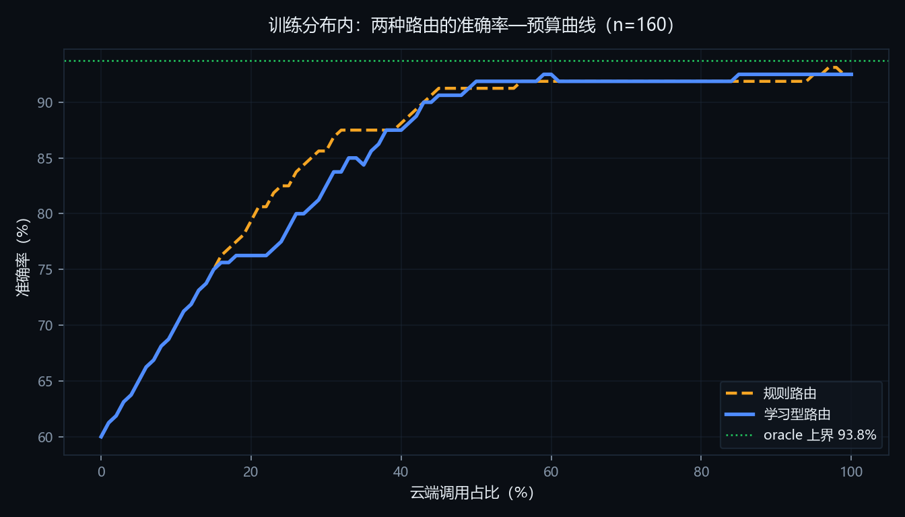
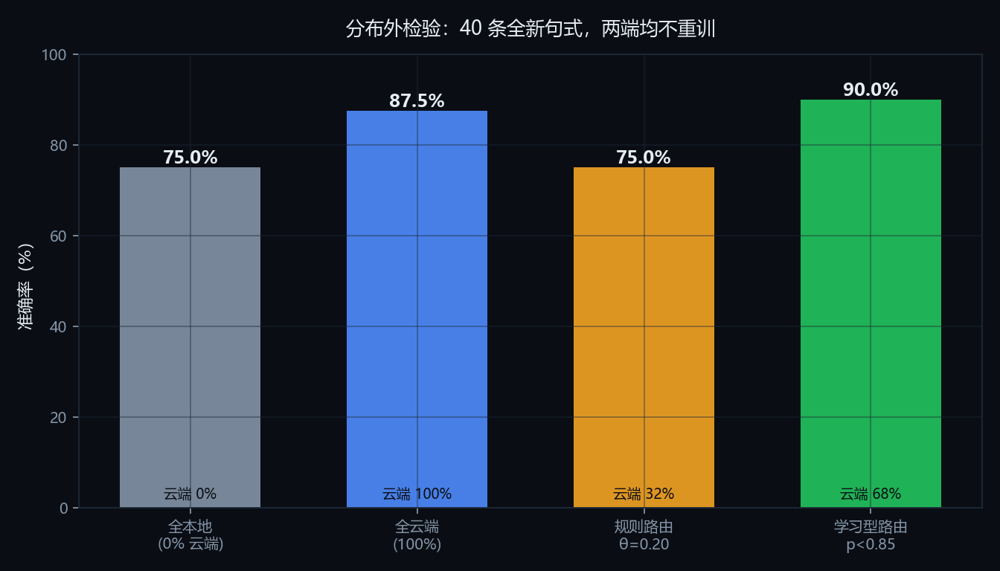

把大模型应用部署到普通人的电脑上，会立刻遇到一组互相冲突的约束：云端大模型答得准、响应快，但每次调用都要付费、要联网、数据要离开本机；本地小模型零边际成本、数据不出设备、断网可用，却会在稍微复杂的问题上出错。本文提出 HybridMind，一个端云协同的推理路由框架：它在每次请求到达时预测「本地模型能否答对这道题」，判得准则留在本地，判不准才升级云端，并把这个决策连同理由、耗时与费用一并呈现给使用者。
与常见的「按题目难度分流」不同，本文的关键判断是：字符串规则描述的是"题目怎么写"，而不是"模型会不会做错"。我们先用可解释的题面规则建立基线，再用本地模型的真实作答结果作为标签训练学习型路由器，并在同一套封闭答案评测集上比较两者。在 160 条自建题目上，规则路由与学习型路由在训练分布内几乎打平（云端占比 57% 对 56%，准确率同为 91.9%）；但换到 40 条全新句式的分布外题目后，规则路由的难度分从均值 0.33 塌到 0.14（特征词表全部未命中），路由形同虚设、准确率停留在全本地的 75.0%，而学习型路由在同等云端预算下达到 87.5%–90.0%，30% 预算时领先 12.5 个百分点，甚至超过纯云端方案（87.5%）。
本文还报告了一个与直觉相反、但对工程实践有直接意义的实测结论：在这台无独立显卡、单通道内存的普通笔记本上，云端在准确率与延迟上都优于本地（92.5% 对 60.0%，753 ms 对 6271 ms），而每千次调用仅需 ¥0.19。因此路由的价值并不在"省钱"，而在隐私、离线可用性与规模化成本——这一点若不在文档里说清，整个方案就会建立在一个站不住的前提上。
系统以 Python 实现，本地推理走 Ollama（Qwen2.5-1.5B，Q4 量化），云端走任意 OpenAI 兼容接口，前端零依赖、支持 Server-Sent Events 逐 token 输出与路由决策可视化。全部实验基于封闭答案评测集与自动判分，判分不使用大模型当裁判，任何人可用仓库内脚本逐条复算。
2025 年以来，大模型的竞争重心从「参数规模」转向「单位成本下的可用性」。一方面，Qwen2.5、Phi、Gemma 等开源小模型在 0.5B–3B 量级上已能稳定完成指令跟随、抽取与简单推理；另一方面，消费级设备的算力与内存普遍停留在 8–16 GB，无法承载 7B 以上的模型。边缘计算方向的系统性综述指出，端侧部署的核心矛盾在于「在严格的内存与算力预算下保持多步推理能力」，而弹性卸载与云端协同正是缓解这一矛盾的主要手段[1]。于是出现了一个现实的工程问题：当一个应用既要覆盖简单请求、又要处理复杂请求时，应该把哪些请求放在本地？
这不是一个纯学术问题。对一个面向个人用户的应用，云端调用意味着三件事同时发生：账单随调用量线性增长、响应时间多一次网络往返、用户数据离开设备。而对一个面向企业内网的应用，第三点往往是硬约束——数据不出内网，本地模型就是唯一选项，哪怕它更笨。路由层因此成为端云协同的枢纽：它决定了成本、隐私与质量三者的实际分配比例。
本文最初的设计建立在一条看似显然的推理上：本地推理零成本、延迟更低，所以把简单请求留在本地就能同时省钱和提速。为了验证它，我们在开发机上做了一次完整的双端评测：本地 Qwen2.5-1.5B（Q4 量化，986 MB）与云端 deepseek-chat，在 160 条同一评测集上运行。
结果与预期相反（见表 6-2）：云端不仅准确率高 32.5 个百分点，平均延迟还低到 1/8，而每千次调用的费用只有 ¥0.19。原因并不神秘——开发机没有独立显卡，内存为单通道 DDR4-3200，本地推理速度被带宽压在 3–4 token/s；而云端单次往返加生成不到 1 秒。
这次失败带来一个方法论上的收获：端侧推理的价值必须按场景拆开谈，而不能笼统地宣称"更快更省"。在隐私敏感、网络受限、调用规模巨大的场景里，本地路由的价值是真实且不可替代的；在单机、单用户、低调用量的场景里，它的价值接近于零。诚实地区分这两种情形，比给出一个漂亮的平均数字更重要。
据此，本文将研究问题收敛为三个可被实验检验的具体问题：
Q2 是本文的重点。我们在实验中发现了一个容易被忽略的陷阱：在训练分布内比较两种路由方法，会得出完全错误的结论。规则路由的特征词表与评测集的生成模板同源，因此在训练集上表现优异；一旦题目换一种说法，它就彻底失效。这个现象在后文第 6.4 节以分布外实验的形式被量化。
用便宜模型处理简单请求、贵模型兜底难请求，这一思路在文献中通常称为模型级联（cascade）。FrugalGPT 系统化地研究了级联的三种省钱手段——提示词压缩、答案缓存与级联调用，并在多个数据集上报告了「同等准确率下成本降低一个数量级」的结果[2]。这类工作的共同前提是：存在一个可靠的质量信号，能判断便宜模型的输出是否可接受。FrugalGPT 的做法是用一个打分器或规则阈值；本文则把这个信号建模为「本地答对概率」，并直接用真实作答结果训练它。
与级联相邻的另一个概念是混合专家（MoE）中的路由：门控网络在层内决定激活哪些专家[3]。本文的"路由"发生在系统层而非模型层，选择的是推理后端而非神经元子集，因此两者在实现与优化目标上都不同——MoE 优化的是模型容量与计算量的比，本文优化的是应用侧的准确率、成本与隐私的分配。
更系统的梳理见 Varangot-Reille 等人的综述[4]：该文把路由形式化为「性能—成本」优化问题，按"何时路由、路由到什么、如何实现"三个维度归纳了相似度匹配、监督学习、强化学习与生成式四类方法，并指出当前研究的主要短板是实验缺乏标准化、以及很少考虑非财务成本。本文的规则基线对应其中"规则/相似度"一档，学习型路由对应"监督学习"一档，两者在同一评测集上的对照，正是对该综述所呼吁的"可比较实验"的一次小规模响应。
RouteLLM 将路由形式化为二分类问题：用偏好数据训练一个分类器，预测「强模型是否显著优于弱模型」，从而在调用前决定去向[5]。它在 MT-Bench、MMLU 等公开基准上验证了"用 20%–50% 的强模型调用量保留 95% 以上的质量"。本文与它的差别有三点：其一，本文的判断对象是本地小模型是否会答错，标签直接来自真实作答而非人类偏好；其二，本文关注的是单机、消费级硬件这一受限场景，特征必须能在毫秒内算出、且不依赖额外模型；其三，本文额外检验了分布外泛化，而这一点在多数路由工作报告中并未单独评估。
Qwen2.5 系列在 0.5B–72B 的多个规模上开源，其 1.5B 版本在指令跟随与中文任务上具备基本可用性，且 4-bit 量化后模型体积约 1 GB，可放入普通笔记本内存[6]。这为"在消费级设备上跑本地推理"提供了现实基础。但也要看到：小模型的失败模式往往是静默的——它不会说"我不会"，而是给出一个语法通顺但数值错误的答案。这使"事后检测错误"比"事前预测错误"更难，也是本文选择在调用前做判断的原因之一。
近来的工作进一步把"大小模型如何配合"推进到 token 粒度。R2R 的观察是：大模型与小模型的推理路径只有少数关键 token 会真正分叉，其余 token 要么相同、要么只是表述差异；因此只需在这些分叉点上调用大模型[7]。这类方法能在同等平均激活参数下逼近大模型效果，但需要模型白盒访问与专门的训练管线。本文工作在请求级路由，粒度更粗、效果上限更低，代价是它可以跨厂商、跨部署形态直接落地——两者的关系类似"编译期优化"与"运行时调度"。
| 维度 | FrugalGPT / 级联 | RouteLLM | 本文 |
|---|---|---|---|
| 判断对象 | 输出是否达标 | 强模型是否更好 | 本地是否会答错 |
| 标签来源 | 打分器 / 规则 | 人类偏好 | 真实作答结果 |
| 特征开销 | 低 | 需嵌入模型 | 纯题面统计，零模型 |
| 部署环境 | 云端 | 云端 | 单机笔记本科普及 |
| 分布外评估 | 未单独报告 | 未单独报告 | 专门构造并报告 |
系统分为四层，自下而上分别是推理后端、路由决策、编排与账本、交互呈现。分层的目的是让每一层都能被单独替换与单独测量：换模型不动路由，换路由不动编排，换界面不动业务。
两个后端实现同一个协议：generate(messages, max_tokens, temperature) -> Generation，其中 Generation 携带文本、token 数、延迟与费用。这段抽象是整个系统的关键——正因为本地与云端返回同一种结构，编排层才不需要知道这次推理究竟发生在哪里，成本账本也才能用同一套代码统计两种后端。
@dataclass
class Generation:
text: str
model: str
prompt_tokens: int
completion_tokens: int
latency_ms: float
cost_cny: float = 0.0 # 本地恒为 0，云端按价格表计算
云端价格表以「元 / 百万 token」为单位内置在配置里，费用由 token 数与单价直接相乘得到，不使用估算值：
cost = (prompt_tokens * price.input + completion_tokens * price.output) / 1e6
编排层负责一次请求的完整生命周期，共四步：
route ∈ {local, cloud} 与人类可读的理由列表；ProviderError（网络中断、密钥失效、服务超时），自动切到另一端并在理由中记录；降级不是可选项而是必需项：开发过程中我们遇到过一次 DeepSeek 返回 429 的情况，若不降级，整个演示会直接报错中断。降级后用户看到的仍然是一个答案，只是在路由面板上多一行「云端失败，已降级本地」——失败可见但不致命，这是可运营系统的底线。
每一次请求都会产出一条完整的"路由凭证"（RouteTrace），它是这套系统能自证价值的基础。字段包括：走了哪条路、分值多少、阈值多少、决策理由、是否发生升级、本地自评置信度、端到端延迟、输入输出 token 与费用。
账本（Ledger）在进程内累计请求数、本地占比、云端调用数、升级次数、累计费用与平均延迟，前端底部状态栏实时展示。这个设计让"路由到底省了多少"成为屏幕上持续可见的数字，而不是文档里一个跑完就忘的百分比。
界面刻意做成左右两栏：左侧对话，右侧"路由决策"。右侧面板是本文的表达重点，它需要在一屏内回答四个问题——走了哪条路、凭什么这么判、花了多少钱、等了多久。
因为本地推理在开发机上只有 3–4 token/s，界面必须支持流式输出：采用 Server-Sent Events 逐 token 推送，事件类型包括 trace（决策先于生成下发）、delta（增量文本）、status（自评中）、escalate（升级提示）、reset（清空重写）、done（完整凭证）。把"决策"放在"第一个字"之前下发，是为了让用户在实际等待生成时就已经知道这次推理去了哪里。
设一次请求的输入文本为 x，本地后端为 ML，云端为 MC。定义二元变量 y 表示"本地是否答对"（以评测集的标准答案判定）。路由器的任务是学习一个打分函数 s(x) ∈ [0,1]，并选择阈值 t：当 s(x) ≥ t 时走本地，否则走云端。
在给定云端预算 B（允许上云的请求比例）下，目标是最大化端到端准确率：
max E[ correct ] s.t. P( route = cloud ) ≤ B
这个形式化区分了两种策略的本质差异：规则策略的 s 是"难度分"（越高越该上云，方向相反），学习型策略的 s 直接就是"本地答对概率"的估计。前者是人工先验，后者是数据驱动的估计量——这正是第 6.4 节分布外实验要检验的差别。
基线使用显式字符串特征，不依赖任何模型，目的是提供一个"零成本、完全可解释"的参照。特征分为五组：数学领域术语、应用题语境词、推理要求词、代码/算法词、并列与条件结构词，再叠加文本长度、问句数量与算式模式。特征的加权和经截断后得到 [0,1] 的难度分。
设计时刻意做过一次修正。初版把「计算」「多少」也算作数学特征，结果「计算 87+8 是多少」与「计算这个积分」得到同样的分数。这类词其实是问句措辞而非难度信号，必须与领域术语分开，否则所有算术题都会被送去云端，方案的成本优势直接归零。修正后的权重见表 4-1。
| 特征组 | 权重 | 说明 |
|---|---|---|
| 数学领域术语 | 0.28 + 0.05·(k−1) | 方程、积分、概率、排列组合… |
| 推理/论证要求 | 0.20 + 0.08·(k−1) | 证明、推导、反证、分析… |
| 代码/算法 | 0.25 + 0.05·(k−1) | 函数、报错、复杂度… |
| 应用题语境 | 0.12 + 0.03·(k−1) | 单价、折扣、工程、工人… |
| 算式表达式 | 0.08 | 出现 a+b 形式，弱信号 |
| 文本长度 | 0.20·min(len/300, 1) | 长度超过 75 字才计入 |
| 并列/条件结构 | 0.10·min(k, 2) | 然后、并且、如果… |
| 基准分 | 0.10 | 所有请求的起点 |
学习型路由把问题从"这题难不难"改成"本地会不会答错"。标签直接来自本地模型的真实作答结果（答对 1、答错 0），共 160 条。特征扩展到 14 维，全部是可在微秒级算出的题面统计量，不引入嵌入模型（表 4-2）。
| 类别 | 特征 | 动机 |
|---|---|---|
| 规模 | 字符长度、句数、子句数、问句数 | 长题往往需要多处约束同时满足 |
| 数值 | 数字个数、最大数值(log1p)、运算符个数、是否含百分号 | 多步运算与百分比链是本地模型的主要失手区 |
| 语义 | 数学术语、应用题语境、推理要求、代码术语、并列结构 | 复用规则层的词表，保证两层可对照 |
| 模式 | 是否含算式表达式 | 区分"直接算"与"读题后算" |
模型选用 L2 正则的逻辑回归，先做标准化。选择理由并非"效果最好"，而是样本量与可解释性：160 条样本不足以支撑复杂模型，而逻辑回归的系数可以直接读成"该特征让本地答对的几率上升还是下降"，便于答辩时逐条解释。训练流程严格使用 5 折分层交叉验证，阈值只在 out-of-fold 预测上选取，避免用训练集自身预测调参带来的乐观偏差。
训练完成后，模型被导出为 JSON（标准化均值、方差、系数、截距），运行期只用纯 Python 做一次点积与 sigmoid，不依赖 scikit-learn。导出结果与 sklearn 预测的最大偏差为 0.000000，已在训练脚本中自动校验。这样部署端少一个重型依赖，评审也更容易复现。
| 特征 | 系数 | 解读 |
|---|---|---|
length | −1.139 | 越长越可能答错 |
multi_hop_terms | −0.964 | 含"然后/并且"等结构显著降低本地正确率 |
word_problem_terms | −0.928 | 应用题语境是强负信号 |
num_sentences | −0.862 | 多句意味着多约束 |
arithmetic | +0.530 | 直接给算式的题反而更容易答对 |
math_terms | −0.431 | 领域术语指向需要专门知识 |
log_max_number | +0.356 | 数值较大时模型更谨慎，错误反而更少 |
code_terms 与 reasoning_terms 系数为 0，因为评测集中未出现此类样本，属已知局限。除了"事前预测"，系统还有一道"事后检查"：让本地模型对自己的答案给出 0–1 的置信度，低于阈值 τ 就升级云端重答。思路借自推测执行——先让便宜的算，验证不过才付昂贵的那份。
但实测中这条机制出过一次洋相：问「1+1 等于几」时，路由判本地（本地答对概率 0.99），兜底却因为小模型自评不足而把它拖去云端，白花了一次调用。问题不在兜底本身，而在于它忽略了一个已经存在的先验。修正方案是：学习型路由下，只有当概率落在 [阈值, 阈值 + margin) 的不确定区间时才启用自评，margin 默认 0.10。这样"很有把握的简单题"不会再被二次检查，而"擦边判给本地"的题目仍保留兜底。
评测集共 160 条，全部为封闭答案题目，分四个难度档（表 5-1）。题目由脚本按固定随机种子程序化生成，标准答案由生成过程精确计算，因此不存在"标准答案本身有误"的风险，任何人重跑脚本都能得到同一份数据。
| 难度档 | 题目形态 | 样本 | 考察点 |
|---|---|---|---|
| tier1 | 单步加减乘除 | 60 | 基本运算是否可靠 |
| tier2 | 两步运算、折扣、周长 | 50 | 能否保持中间结果 |
| tier3 | 三步运算、百分比连乘、路程 | 30 | 多步推导的稳定性 |
| tier4 | 工程问题、数位运算等多步推理 | 20 | 复合约束下的推理 |
另构造 40 条分布外（OOD）题目用于泛化检验。这批题目的句式与词汇与主集刻意不重叠：找零、分组平均、反向求解、时间跨度、倍数关系、和差问题，外加 5 条常识短答。构造它们的目的只有一个——检验路由策略在"没见过的说法"上是否还成立，因此两个路由器都不在新数据上重训。
判分刻意不使用大模型当裁判。理由有两条：其一，用模型判模型会引入一个不可控变量，且同样产生费用；其二，评委无法逐条复算，结论的可信度会打折。本文采用两条确定性规则：
判分规则在开发过程中修正过一次，值得记录。评测早期发现：「234 除以 13 的商是多少」标准答案为 18，模型答「商是 18，余数是 4」，按"取最后一个数字"会被判错——但它的商是对的，余数是题目之外的附带量。修正为：先剥离「余数/余…」从句，再取最后一个数字。同时补充了回归测试，确保这个修正不会掩盖商本身算错（「商是 20，余数是 7」对标准答案 21 仍判错）。这一处修正使 80 条子集上的准确率由 82.5% 调整为 85.0%，共 2 条改判。
实验设四组对照：全本地（不路由）、全云端（不路由）、规则路由（阈值 θ）、学习型路由（阈值由交叉验证选取）。此外计算一个理论上界 oracle：对每条题目都取"两个模型里能答对的那一个"，用来衡量路由还剩多少提升空间。
指标包括：端到端准确率、云端调用占比、千次调用成本（元）、平均与 P95 延迟。为了公平比较两种路由策略，本文在相同云端预算下绘制准确率曲线——把题目按各自打分排序，取最该上云的 B% 送去云端，其余留本地，这样比较的是"花同样多的钱谁更准"，而不是让两种策略各自挑选最有利的阈值。
| 项目 | 配置 |
|---|---|
| CPU | Intel Core i5-13420H（8 核 12 线程） |
| 内存 | 16 GB DDR4-3200，单通道（仅插一条） |
| 显卡 | Intel UHD 集显，无 CUDA |
| 系统 | Windows 11 家庭版 |
| 本地模型 | qwen2.5:1.5b（Q4_K_M，986 MB，Ollama 0.40.10） |
| 云端模型 | deepseek-chat（OpenAI 兼容接口） |
| 生成参数 | temperature 0.2，max_tokens 128（评测）/ 256（演示） |
| 学习型模型 | 标准化 + L2 逻辑回归（C=1.0，class_weight=balanced），5 折分层交叉验证，随机种子 20261024 |
先回答 Q1 的一半：本地模型在这台机器上到底能跑多快。用三条典型提示做基准，模型已预热（排除首次加载开销）：
| 提示类型 | 输出 token | 延迟 | 吞吐 |
|---|---|---|---|
| 单步运算 | 13 | 10.1 s | 1.3 tok/s |
| 两步应用题 | 103 | 23.9 s | 4.3 tok/s |
| 证明类长回答 | 256 | 62.9 s | 4.1 tok/s |
稳定态吞吐为 3.2–4.1 token/s。这个数字远低于同类硬件的常见报告值（15–25 token/s），我们做了归因排查：
ollama ps 显示 100% CPU、无 GPU 卸载，排除集显拖累；Win32_PhysicalMemory 显示只插了一条 16 GB 内存。大模型自回归解码每生成一个 token 都要把权重完整过一遍，属典型的内存带宽受限任务。单通道 DDR4-3200 的有效带宽约为双通道的一半，正是这个数量级的差距。这也解释了一个反直觉现象：增加算力收益有限，增加内存通道收益明显。
同一评测集、同一判分口径下，两个极端策略的对比（表 6-2）。这是全文最重要的一张表，因为它决定了后续所有讨论的前提。
| 指标 | 全本地 | 全云端 |
|---|---|---|
| 准确率 | 60.0% | 92.5% |
| 单条成本 | ¥0 | ¥0.000194 |
| 千次成本 | ¥0 | ¥0.194 |
| 平均延迟 | 6271 ms | 753 ms |
| P95 延迟 | 16263 ms | 1012 ms |
按难度档拆开看，本地模型的失效边界非常清晰：
| 难度档 | 样本 | 本地准确率 | 典型失败 |
|---|---|---|---|
| tier1 单步 | 60 | 98.3% | 几乎无 |
| tier2 两步 | 50 | 68.0% | 33×7+11 答成 260 |
| tier3 三步 | 30 | 10.0% | 百分比连乘几乎全错 |
| tier4 多步推理 | 20 | 0% | 工程问题全部失手 |
这是本作品最干净的一个实验结果：1.5B 模型在单步算术上接近满分，一旦需要保持中间结果就断崖式下跌。这条曲线不需要任何解释性话术——它本身就说明了"为什么需要路由"：不是所有请求都值得送去云端，但两步以上必须送。
在 θ=0.45（初始默认值）下，160 条中只有 1 条被判给云端，路由形同虚设。把阈值下调到 0.20 才有实际效果：云端占比 57%，准确率 91.9%，千次成本 ¥0.134，相比纯云端准确率只降 0.6 个百分点、成本降 31%。阈值扫描结果见表 6-4。
| θ | 云端占比 | 准确率 | 千次成本 |
|---|---|---|---|
| 0.00 | 100% | 92.5% | ¥0.194 |
| 0.20 | 57% | 91.9% | ¥0.134 |
| 0.30 | 16% | 76.2% | ¥0.043 |
| 0.40 | 1% | 60.6% | ¥0.001 |
| 0.45（原默认） | 1% | 60.6% | ¥0.001 |
注意 θ 从 0.20 到 0.30 时准确率从 91.9% 猛跌到 76.2%——曲线是断崖而非平滑。原因是规则特征只能把题目粗略分堆，阈值一旦收紧就整档丢失。
学习型路由的 5 折交叉验证 AUC = 0.9355，说明特征确实携带了"本地是否会答错"的信息。但在训练分布内，它的端到端表现与规则路由几乎相同（云端 56%、准确率 91.9%），并未带来可观测的收益（图 6-1 蓝线与橙线大段重合）。

如果实验到此为止，结论会是"学习型路由没有必要"。这个结论是错的，原因在第 6.4 节。
我们另外构造 40 条全新句式的题目，两个路由器都不在新数据上重训，直接沿用主集训练/调参的结果。结果如表 6-5 与图 6-2。
| 策略 | 云端占比 | OOD 准确率 |
|---|---|---|
| 全本地 | 0% | 75.0% |
| 全云端 | 100% | 87.5% |
| 规则路由 θ=0.20 | 32% | 75.0% |
| 学习型路由 p<0.85 | 68% | 90.0% |

同等云端预算下的逐点比较更能说明问题：
| 云端预算 | 规则路由 | 学习型路由 | 差距 |
|---|---|---|---|
| 20% | 75.0% | 77.5% | +2.5 pt |
| 30% | 75.0% | 87.5% | +12.5 pt |
| 40% | 72.5% | 87.5% | +15.0 pt |
| 50% | 75.0% | 87.5% | +12.5 pt |
| 60% | 85.0% | 87.5% | +2.5 pt |
诊断结果非常直接：规则难度分在 OOD 上均值从 0.33 塌到 0.14，最大值只有 0.22。它的特征词表是「计算 / 求解 / 多少 / 单价 / 折扣」，而 OOD 题目说的是「还剩几元 / 每组几人 / 这个数是几」——一个词都没命中。于是所有题都被判为简单，全部留在本地。
学习型路由学到的是「什么样的题本地会答错」这一更本质的映射，因此能跨表述泛化。特别值得注意的是它在 OOD 上达到 90.0%，超过了纯云端方案的 87.5%——说明它不仅能"少花钱"，还能"挑对模型"：有些题本地答对了而云端答错，路由把这些题留在了本地。
诚实记录三类失败，它们比成功案例更能说明系统的边界。
其一，本地算错但表述通顺。「先算 33 乘以 7，再加上 11」标准答案 242，模型答 260，且给出了一行看似合理的算式。这类错误无法从文本形式上识别，只能靠统计特征事前预判。
其二，规则路由的特征盲区。「一个班 45 人，把男生平均分成 5 组，每组几人」不含任何难度词，规则给的难度分约 0.12，必然留在本地；而这类题需要先做减法再做除法，本地约有一半概率出错。
其三，自评置信度的不稳定性。在「1+1」这类题目上，本地模型自评置信度低于阈值 τ，触发了一次不必要的升级。这说明模型自评不是一个可靠的校准器，只能作为辅助信号——这也是 4.4 节把兜底限制在不确定区间的原因。
按表 6-2，云端千次调用仅 ¥0.194。假设一个应用每天 1 万次请求，全部走云端每月约 ¥58——这个量级上，"路由省钱"几乎没有商业意义。因此把省钱的毫秒级端侧推理当作作品卖点是危险的。
但把量级放大三个数量级，结论就变了：
| 日请求量 | 全云端月成本 | 路由 50% 本地后 |
|---|---|---|
| 1 万 | ¥58 | ¥29 |
| 100 万 | ¥5,800 | ¥2,900 |
| 1 亿 | ¥58 万 | ¥29 万 |
真正让本地路由不可替代的是另外三件事，它们都不随规模线性衰减：
学习型路由的阈值有一个直接的业务解释：它就是你愿意接受的"本地答错率"水位。阈值 0.85 意味着"只有预测本地答对概率高于 85% 才留在本地"，低于这个把握就花钱上云。
这比规则路由的"难度分 0.45"好沟通得多——后者需要解释一堆特征权重，前者只需要问一句"你愿意用多少准确率换多少成本"。在真实产品中，这个阈值应当由业务方按场景设定：客服场景可以设 0.9（宁可多花钱），个人助手可以设 0.7（省钱优先）。
code_terms 与 reasoning_terms 在评测集中未出现，系数为 0，等于这两个特征未被检验。app/ config.py 全部可调参数（阈值、价格表、预算） schemas.py 请求/响应/路由凭证的数据结构 pipeline.py 编排：决策 → 推理 → 兜底 → 记账（含流式） providers/ 本地(Ollama) / 云端(OpenAI 兼容) 同构适配 router/ 特征、策略、分类器、置信度 eval/ 判分口径、评测执行、结果落盘 web/ FastAPI + 零依赖前端 scripts/ gen_eval_set.py 评测集生成（固定种子，可复现） gen_ood_set.py 分布外评测集生成 train_router.py 路由器训练 + 交叉验证 + 阈值选择 compare_routers.py 等预算曲线对比 make_figures.py 文档图表生成 build_doc.py 本文档的 PDF 构建 tests/ 路由与判分的单元测试（22 项，全绿）
这套结构是对"机器学习系统技术债"的一次刻意规避。Sculley 等人指出，ML 系统的维护成本主要来自纠缠（entanglement）、未受控的配置蔓延与隐藏的反馈环[9]。本项目的对应做法是：所有后端共享同一协议（解纠缠）、所有决策共享同一凭证结构与同一份 Settings（抑制配置蔓延）、所有路由决策与费用都落盘可查（让反馈环显式化）。
提供两种部署方式。本地演示用 make demo 直接起服务；容器化部署用 docker compose up，编排文件同时拉起 Ollama 与应用，模型卷持久化，应用内置健康检查。单 worker 是刻意的——多进程会各自加载一份模型，在 16 GB 内存的机器上会直接打爆。
| 部署形态 | 依赖 | 适用场景 |
|---|---|---|
| 本机 venv | Python 3.10+、Ollama | 开发、录屏演示 |
| Docker Compose | Docker Desktop | 公网演示、评审复现 |
git clone https://github.com/hanyue0/AMC-- cd AMC-- python -m venv .venv && .venv\Scripts\pip install -r requirements.txt ollama pull qwen2.5:1.5b copy .env.example .env # 填入自己的云端密钥（评审请自备） python scripts/gen_eval_set.py # 重建 160 条评测集 python -m app.eval.run_eval --mode local python -m app.eval.run_eval --mode cloud python scripts/train_router.py # 训练路由器，输出 AUC 与报告 python scripts/compare_routers.py # 等预算曲线 python -m uvicorn app.web.main:app --port 8000
评测集与图表全部由脚本生成，不手填任何数字。密钥只存放在 .env 中，该文件已在 .gitignore 内；仓库全历史经扫描确认不含任何密钥。
大赛要求作品保留"完整、细粒度的 Git 提交历史"，并明确禁止一次性提交全部功能。本项目的 20 余次提交按模块推进，每次提交对应一个可验收的单元：初始化骨架 → 配置 → 后端抽象 → 规则路由 → 置信度兜底 → 编排 → 评测集 → Web 层 → 测试 → 容器化 → 流式 → 判分修正 → 学习型路由 → 分布外实验。
docs/ai-logs/ 目录记录了与 AI 协作的关键决策，包括被否决的建议（例如"用大模型判断难度"因成本翻倍被否决）与实测推翻预设的过程（4 tok/s 与 92.5% 这两个数字如何改变了设计）。这些记录构成了原创性与开发过程真实性的证据。